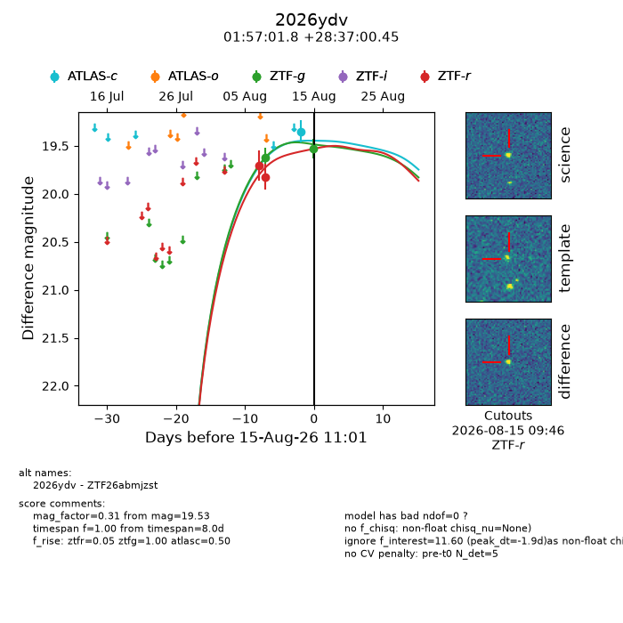
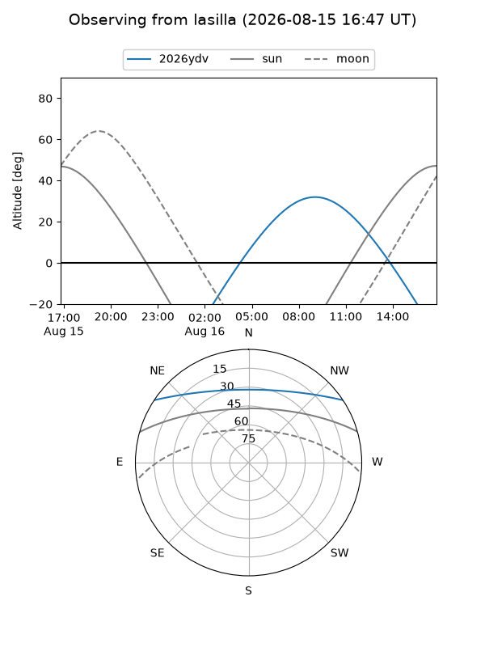
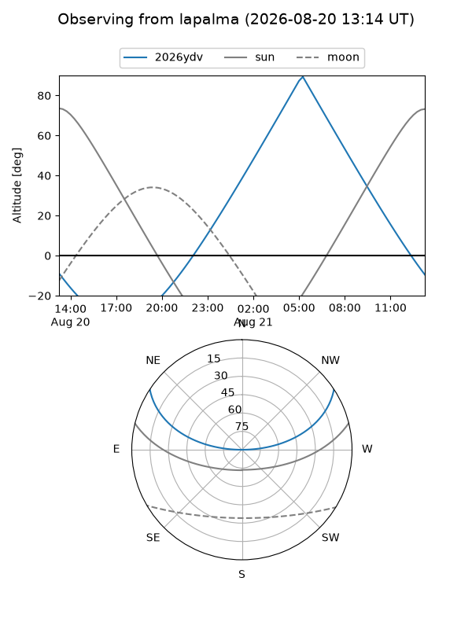
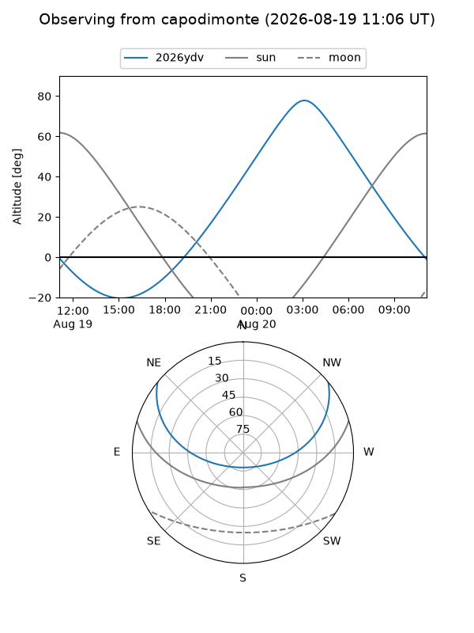
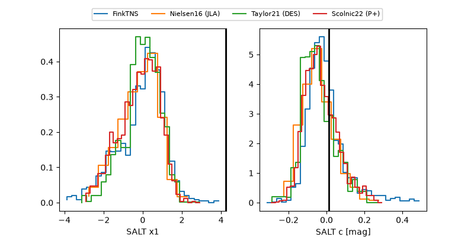

2026ydv
Target 2026ydv at 2026-08-15 11:04
Aliases and brokers:
FINK-ZTF: ztf.fink-portal.org/ZTF26abmjzst
Lasair-ZTF: lasair-ztf.lsst.ac.uk/objects/ZTF26abmjzst
ALeRCE-ZTF: alerce.online/object/ZTF26abmjzst
YSE-PZ: ziggy.ucolick.org/yse/transient_detail/2026ydv
TNS name: wis-tns.org/object/2026ydv
Direct TNS query: direct search
alt names
ZTF26abmjzst (ztf,fink_ztf)
2026ydv (tns,yse)
Coordinates:
equatorial (ra, dec) = 29.2575,+28.61679
equatorial (HMS+DMS) = 01:57:01.79,+28:37:00.45
galactic (l, b) = (139.9384,-32.07963)
Flags:
TNS type: nan
peak dt: -1.9
Photometry:
last atlasc=19.35, ztfg=19.53, ztfr=19.82
1 atlasc, 2 ztfg, 2 ztfr detections
Lightcurve

Visibility



Additional plots
